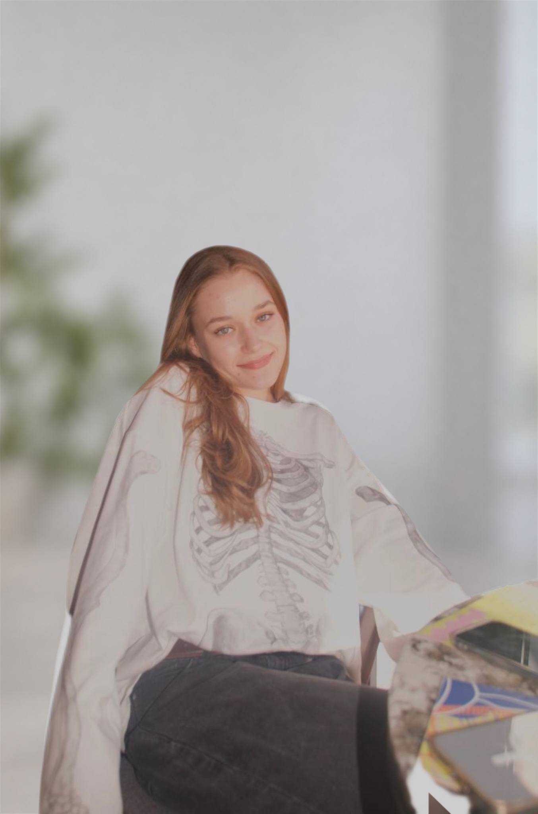
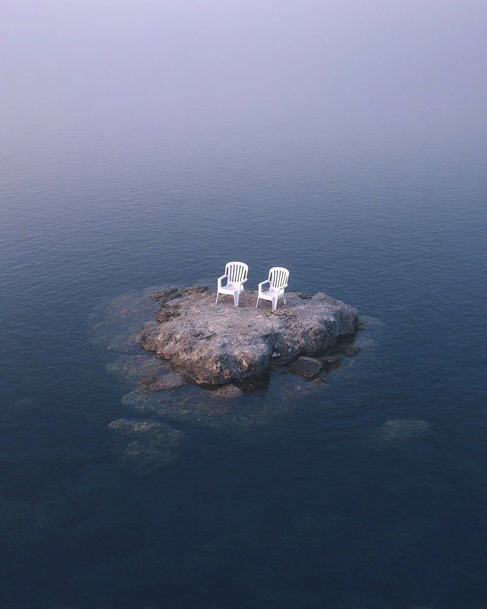
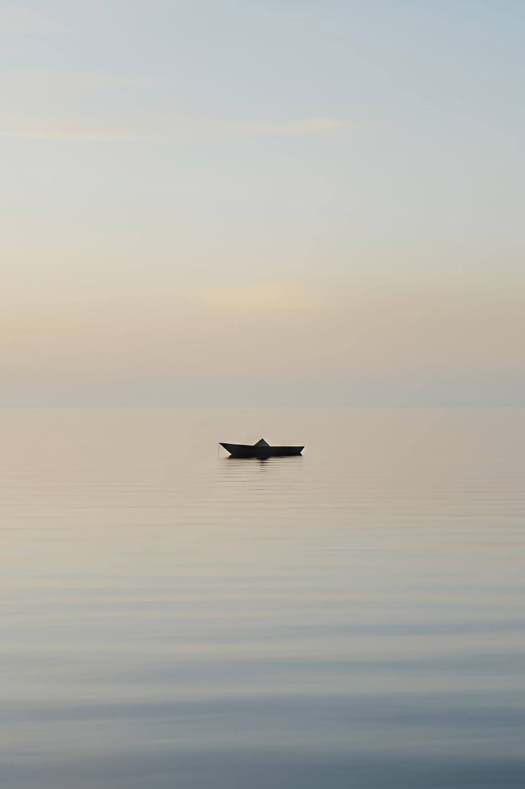
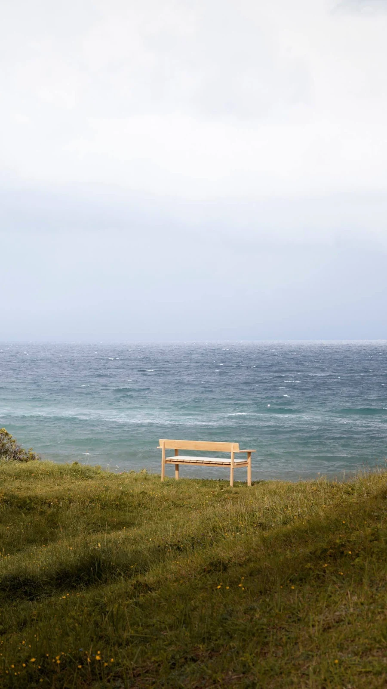

Стресс и тревога
- Тревожность и постоянное внутреннее напряжение
- Стресс и эмоциональное выгорание
- Трудности с решениями, страхи и переживания о будущем

Психолог
в интегративном подходе
«Я верю, что путь к свободе начинается с понимания себя»
Записаться на консультациюС тем, что волнует, повторяется или мешает чувствовать себя собой.

Границы моей практики
Эти запросы не входят в область моей практики.
Глубже понимать свой опыт и находить новые способы действовать в настоящем.
Понять причины
Помогает глубже понять себя, исследовать причины переживаний и повторяющихся жизненных сценариев, увидеть связь между прошлым опытом и тем, что происходит в настоящем.
Найти новые способы
Помогают работать с конкретными запросами, замечать взаимосвязь мыслей, эмоций и поведения, а также находить новые способы справляться с тревогой, внутренним напряжением и повседневными трудностями.
В работе для меня важны бережность, уважение и безопасность. Я создаю пространство, в котором вы сможете быть собой, не боясь осуждения. Я ценю доверие и соблюдаю конфиденциальность нашей работы в пределах, предусмотренных законом.

Я верю, что у каждого есть внутренняя сила и ресурсы, которые помогают лучше понимать себя, иногда лишь нужен проводник, чтобы найти к ним путь.
Мне близка идея внутренней свободы: возможности делать собственный выбор, опираться на свои ценности, и выстраивать жизнь в согласии с собой.
Необязательно приходить с чётко сформулированным запросом. Иногда достаточно чувства, что что-то не так или хочется что-то изменить. Мы можем вместе разобраться в том, что вас беспокоит, и постепенно найти направление нашей работы.
На связи, где бы вы ни были
Индивидуальная онлайн-консультация.
длительность встречи
стоимость консультации
Первый шаг к нашему разговору
Напишите мне в Telegram — мы познакомимся и выберем время встречи. Для записи достаточно вашего имени и удобного времени.
Связаться в TelegramИли по почте: dunaeva_zoya10@mail.ru
Консультации для взрослых от 18 лет. Пожалуйста, не отправляйте при записи медицинские документы и подробности о здоровье.

Продолжить знакомство
О чувствах, отношениях и понимании себя.
Больше обо мне и моей работе в Telegram-канале.